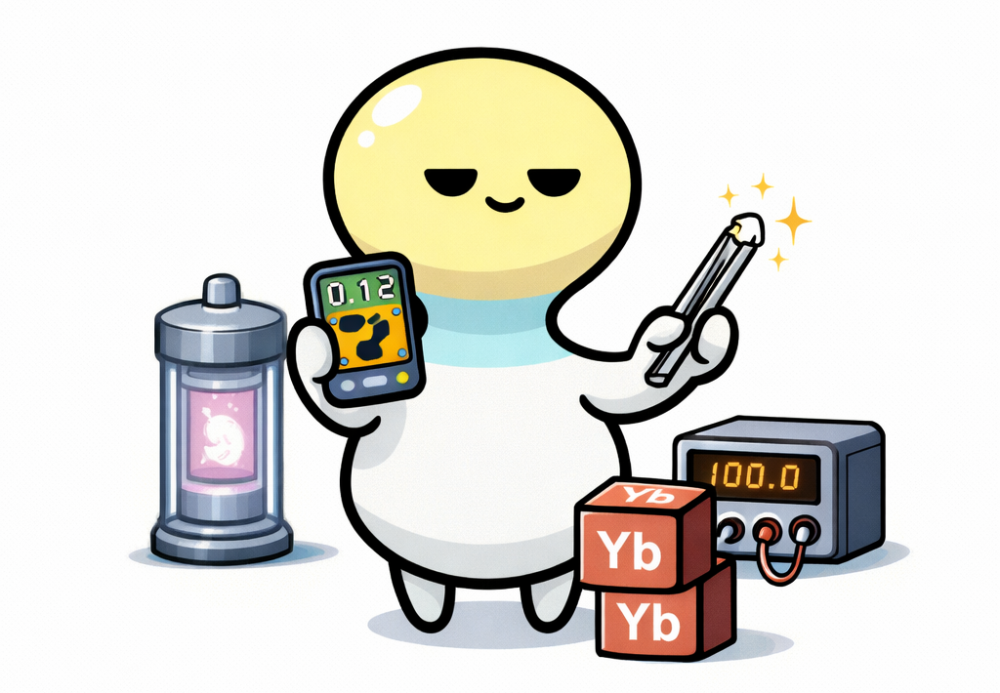
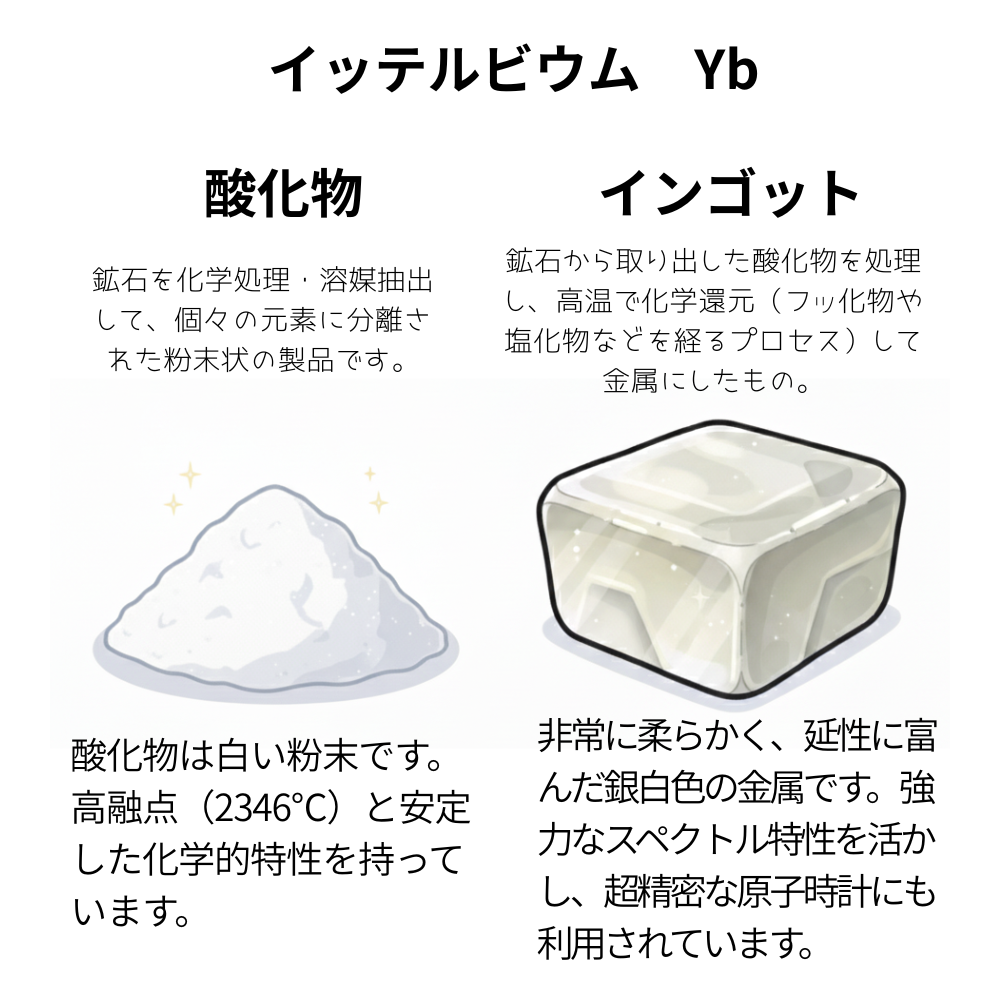
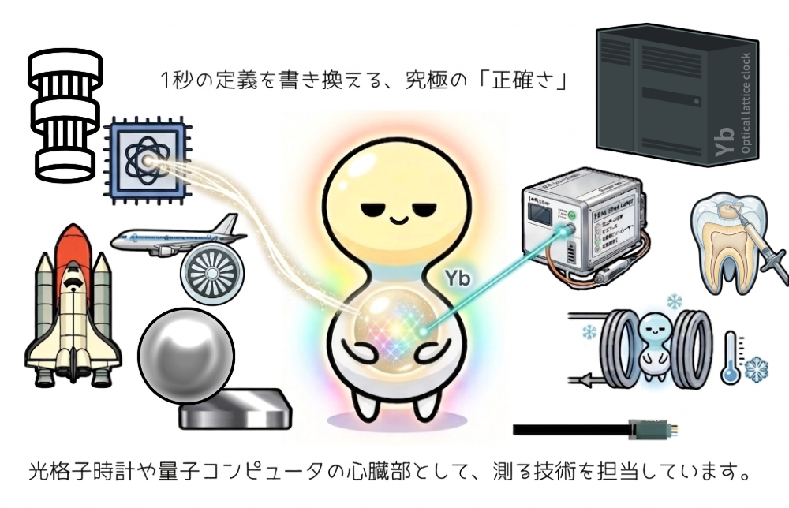

イッテルビウム
Ytterbium

イッテルビウムは、元素で、『レアアース（希土類元素）』と呼ばれる17種類の一つです。
🔮 擬人化キャラの性格
極めて物静かで、感情を表に出すことは滅多にありません。しかし、その内面には、一分の妥協も許さない強靭な美意識を秘めています。流行や他人の評価には一切関心がなく、ただひたすらに自分の納得する「極致」を追い求めるその姿は、周囲から畏敬の念を込めて見つめられています。あなたの追求する純度は、誰にも真似できません。

🧪 リアルな元素の特徴
「次世代の時間の基準（光格子時計）」の心臓部として、極限の精密世界を支える「時の支配者」。一方で、高出力なファイバーレーザーの光源や、量子コンピュータの量子ビットとしても活躍する、ハイテク界の静かなる革命児です。磁場を利用して絶対零度近くまで冷却する磁気冷凍材料としても利用されています。
| 名称 | イッテルビウム | 記号 | Yb |
|---|---|---|---|
| 番号 | 70 | 原子量 | 173.04 |
| 密度 | 6.90 g/cm3 | 原子半径 | 176 pm |
| 分類 | 遷移金属(ランタノイド) | ||
💎 イッテルビウム、実際はどんなもの？

イッテルビウムは、銀白色の光沢を持つ、展性と延性に富んだ非常に柔らかい金属です。空気中では徐々に酸化されますが、湿気があると反応はより速まります。また、水（冷水では緩やかですが、熱湯では激しく）と反応して水素を発生させる性質があります。他のランタノイドと比較して蒸気圧が高いという性質を持ち、原子物理学の実験においても重宝される存在です。

イッテルビウムは、狙った光を自在に操る性質と、エネルギーを効率よく蓄えて解き放つ性質を持っています。300億年に1秒の誤差も許さない「光格子時計」、金属の精密加工に使われる高出力レーザー、医療用レーザー、量子コンピュータ、そして特殊なガラスやセラミックスの添加剤、原子核物理学の研究材料などに使用されています。